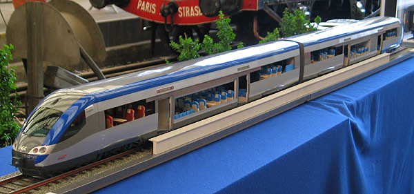

Les AGC
Autorails à Grande Capacité
Les AGC (Autorails à Grande Capacité) sont des éléments automoteur articulés construits par Bombardier pour les conseils régionaux français et exploités par la SNCF. Les premiers éléments ont été mis en service en 2004. Chaque élément est constitué de deux motrices-pilote encadrant une ou deux remorques à caisse courte. Les bogies intermédiaires sont partagés entre deux caisses. Le plancher est bas au niveau des accès et légèrement réhaussé au-dessus des bogies.
La caractéristique innovante des AGC tient dans sa chaine de traction électrique, y compris sur les éléments à traction autonome où les moteurs Diesel sont utilisés en groupes électrogènes. Cette solution était utilisée depuis les années 1950 sur les locomotives Diesel-électrique de la SNCF, tandis que les autorails utilisaient jusqu'à présent des transmissions mécaniques ou des convertisseurs hydrauliques. Ce qui a permis à Bombardier de proposer toute une gamme d'automoteurs à traction autonome ou électrique, ainsi que des éléments bimodes conjugant les intérêts des deux sources d'énergie.
L'appel d'offre initial de 500 éléments fut remporté en 2001. Alstom, grand perdant, avait proposé des éléments non articulés qui reprennaient visiblement des éléments de chaudron des X 73500 conçus par sa branche De Dietrich Ferroviaire. Il ne reste de ce projet qu'une maquette. Une polémique ne manqua pas d'éclater quant à confier un contrat si important à un constructeur étranger, et qui plus est non européen. Il faut toutefois remarquer que les AGC ont été assemblés en France, à Crespin, là même où les ANF avaient produit les Caravelles que les AGC ont poussé à la retraite. Alstom eu néanmoins une maigre consolation en se voyant confier la construction des remorques intermédiaires. En 2006, Bombardier signait un avenant portant le nombre définitif à 700 éléments tous modes confondus.
L'AGC... si Alstom avait gagné. On reconnait des chaudrons d'X 73500.
Les AGC sont plutôt un succès. Ils sont visibles sur l'ensemble du territoire métropolitain puisque toutes les régions (hors Corse qui ne possède pas de Chemins de fer à écartement standard) en ont commandés, y compris l'Ile de France qui dispose d'habitude de matériel spécifique. Parmi leurs qualités, on peut citer une bonne fiabilité, une fois les soucis de jeunesse résolus, une vélocité satisfaisante et le silence de roulement. En revanche, les clients leur reprochent un confort perfectible (dû en partie à la suspension contrainte par le plancher bas et au mobilier sujet aux vibrations) et un freinage bruyant. On peut trouver dommage également que ces rames dotées d'attelages automatiques Scharfenberg ne soient pourtant pas compatibles avec les autres matériels SNCF précédemment mis en service.
Quelques données techniques
Constructeur : Bombardier
Type d'élément :
Z 27500 (ZGC) : Electrique bicourant : continu 1,5 kV et monophasé 25 kV, 50 Hz
X 76500 (XGC) : Thermique pur
B 81500 (BGC) : Thermique et monocourant continu 1,5 kV
B 82500 (BGC Bibi) : Thermique et bicourant continu 1,5 kV et monophasé 25 kV, 50 Hz
Chaîne de traction : Pour les XGC et BGC, groupe électrogène équipé d'un alternateur triphasé.
Sur les ZGC et BGC Bibi, transformateur sous 25kV 50Hz.
Redresseurs de courant alimentant un bus continu 1500V.
Onduleurs de traction à transistors IGBT.
Motorisation: 2 moteurs asynchrones entrainant chacun un essieu dans le bogie d'extrémité des motrices.
Puissance totale: 1324 kW (en mode Thermique), 1900 kW (en mode Electrique)
Le bus continu alimente également des convertisseurs pour les auxiliaires.
Pour plus d'info:
La fiche AGC sur Wikipedia
Le dossier sur les AGC sur @utorails.com
La fiche sur les AGC sur Trains-Europe.

La Z 27528/27 Haute Normandie prêtée à Midi-Pyrénées et équipée
d'un pantographe large pour la caténaire Midi, Toulouse (21/06/2015)

L'X 76726 Auvergne pelliculé au Breuil sur Couze (22/05/2011)

Le B 81615/16 PACA quitte Marseille St Charles (24/05/2014)

Le B 82510/09 Champagne Ardennes à Longueville (11/09/2011)